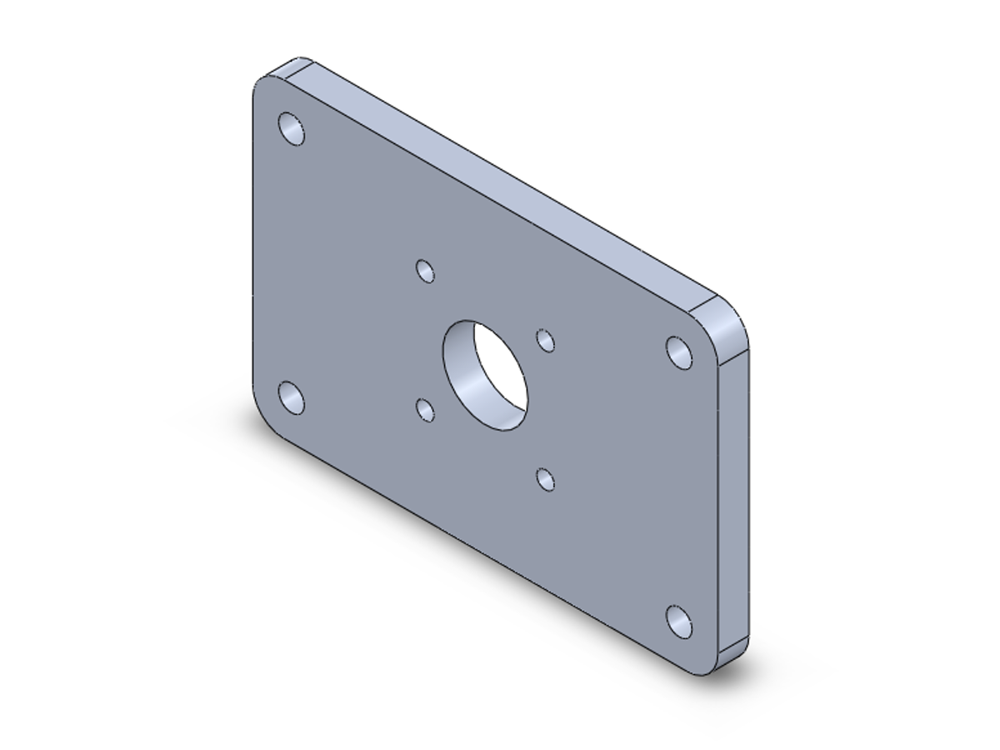

Describe a part in plain language. Your AI app builds it in SOLIDWORKS on your own computer, with real features and fully defined sketches, and measures every result.
Tested with Claude Desktop and Claude Code; also used with Antigravity. Free and open source.

A real build: the request as typed (its save folder left out), an excerpt of the real reply, and the saved part.
How it works
FullyDefined is an MCP server: it gives your AI app the tools to drive SOLIDWORKS.
Sizes, holes, material, in your own words. The AI is guided to ask once, at the start, for anything missing.
Sketches, extrudes, cuts, Hole Wizard holes, fillets, patterns: real features in your own SOLIDWORKS.
The tools read volume, size, positions and sketch status back from the model, to report against what you asked.
What you get
A feature tree you would have built yourself: change a dimension later and the model follows.
Dimensioned and related from the sizes and edges you named, the way an engineer would build them.
The tools answer with numbers measured from the model, so a wrong result shows instead of hiding.
The report
Its build report, as measured from the saved model; the features and sketch status read back from the same file.
| Plate size | 120.0 × 80.0 × 8.0 mm (asked: 120 × 80 × 8) |
|---|---|
| Shaft bore | Ø22.0 at (0, 0) (asked: Ø22, centred) |
| Motor holes | 4 × Ø4.5 at (±15.5, ±15.5): 31 mm square |
| Mounting holes | 4 × Ø6.6 at (±50, ±30): 10.0 mm from both edges |
| Corner fillets | 4 × R8.0 |
| Material | 6061 Alloy, 2700 kg/m³ |
| Volume | 71,715.7 mm³ |
| Mass | 193.6 g |
| Features | Sketch, extrude, 6 Hole Wizard features (9 holes), fillet |
| Sketches | ✓ every sketch fully defined |
Works with
Your data
FullyDefined runs on your computer, next to SOLIDWORKS. It sends nothing anywhere itself and has no telemetry: it only answers your AI app.
What your AI provider sees is what your AI app sends it: your messages and the tools' answers,
such as feature names, sizes, file paths and measurements (and a picture of the model, when one is asked
for). Settings and a log stay on your PC, in %APPDATA%\solidworks-mcp.
Questions
Yes. The installer is not code-signed, so Windows SmartScreen shows "Windows protected your PC". Click More info, then Run anyway. Install shows it.
It is tested on SOLIDWORKS 2026, set to English. Other versions are not tested.
Yes: free and open source under the MIT licence. You need your own SOLIDWORKS licence and an AI app.
Your messages and the tools' answers, through your AI app and under its terms. FullyDefined itself sends nothing anywhere.